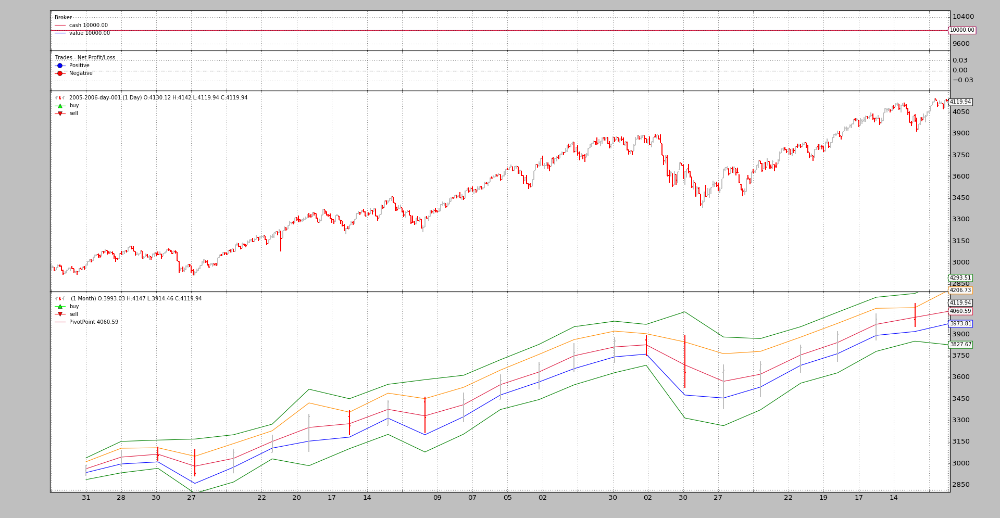
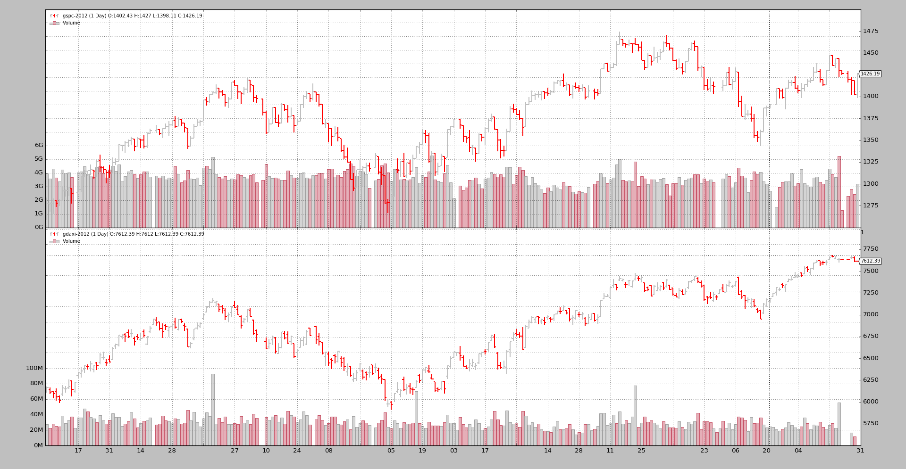

backtrader - Python backtesting¶
backtrader offers a complete backtesting platform with this (not fully
comprehensive) list of features:
- Index 0 approach to access the currently produced (or to be produced) data
- Index -1 approach to access the last produced data (to remain Pythonic)
- Multiple Strategies at the same time
- Multiple Datas at the same Time
- Datas with different timeframes can be mixed (days and weeks)
- Data Resampling
- Data Replaying (i.e: indicators/strategies see 5 bars in a weekly timeframe)
- Indicators (several) which can of course take datas and/or indicators as input
- Natural python language/operations for Indicator development and object comparison/operations (arithmetic, logical operators) As much as permitted by Pthon overriding capabilities (if, and, or cannot be overriden ... but they are provided as logical functions)
- Broker implementation with AtMarket, AtClose, AtLimit, Stop, StopLimit orders
- Commission schemes supporting futures-like and stocks-like objects and customizable
- Event based (strategy/indicator ‘next’ will be called with all subordinate indicators calculated and data fetched)
- Vector (in the form on inner for loops) based for a one shot calculation This applies to indicators ... Strategies always are executed one step at a time
- Strategy optimization (including multicore support)
- Plotting support for visual inspection
The Blog Entries¶
Mixing Timeframes in Indicators by mementum on May 05
Release 1.3.0.92 brings up the possibility to have data (from either data feeds and/or indicators) from different timeframes mixed.

Pivot Point and Cross Plotting by mementum on Apr 28
An interesting request came across:
Synchronizing different markets by mementum on Apr 19
The more the usage the more the mix of ideas and unexpected scenarios that
backtraderhas to face. And with each new one, a challenge to see if the platform can live up to the expectations set forth when development started, flexibility and ease of use were the targets and Python was chosen as the cornerstone.Bid-Ask Data to OHLC by mementum on Apr 16
Lately
backtraderexecuted an Escape from OHLC Land by implementing line overriding, which allows to redefine the entire hierarchy and for example have data feeds which only featurebid,askanddatetimelines.
Escape from OHLC Land by mementum on Mar 08
One of the key concepts applied during the conception and development of
backtraderwas flexibility. The metaprogramming and introspection capabilities of Python were (and still are) the basis to keep many things flexible whilst still being able to deliver.


{kind=link}
{kind=link}